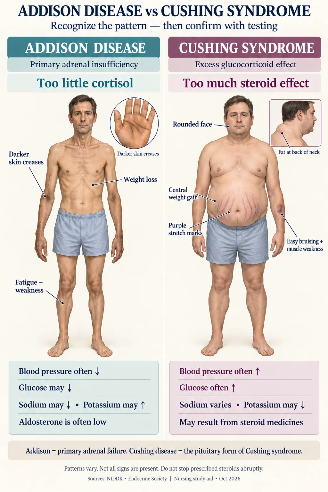

Hormone Hall of Fame III 🎩
Adrenal cortex · adrenal medulla · ovaries · testes
The last stop in the series is the steroid half of the endocrine system. Two small triangular glands sitting on the kidneys handle salt, sugar, sex and shock — and the gonads finish the job. These are the hormones behind Addison, Cushing, Conn, phaeochromocytoma and every steroid taper you will ever hang, so this is the page that pays off later.
THE ADRENAL GLAND
STEP 1 · FOUR LAYERSOne gland, two completely different organs stacked together: a steroid factory wrapped around a nerve ending.
🔬 Master diagram — the gland and its four zones

Cortex surrounds medulla; the cortical layers have different products.
🔍 Open full-size illustration📖 Read the illustration as text
Outer zona glomerulosa makes aldosterone; fasciculata makes cortisol; reticularis makes adrenal androgens. Medulla makes catecholamines. Aldosterone is mainly regulated by angiotensin II and potassium; ACTH mainly regulates cortisol and adrenal androgen production.
🧬 Why the medulla behaves so differently
The cortex develops from ordinary gland tissue and makes steroids from cholesterol — slow, gene-level effects. The medulla develops from nervous tissue and its cells are modified sympathetic neurons.
So the medulla answers to a nerve impulse, not to ACTH, and its hormones work in seconds, not hours.
🧪 Everything the cortex makes starts as cholesterol
Aldosterone, cortisol and the adrenal androgens are all steroids cut from the same cholesterol backbone. That gives them shared properties:
- They are fat-soluble, so they cross membranes and act on DNA — slow onset, long duration.
- They feed back and shut off the pituitary, which is why exogenous steroids suppress the adrenal glands.
- At high enough doses each one starts to spill over into the others' effects — high-dose cortisol also holds sodium and dumps potassium.
THE CORTEX — SALT, SUGAR, SEX
STEP 2 · STEROIDSThree hormone families from three layers, in the order you meet them from the outside in.
🖼️ Shown in the picture: Adrenal layers and their hormones ↑
🧂 Aldosterone — the salt hormone
- Source
- Adrenal cortex — zona glomerulosa
- Target
- Kidney — distal tubule and collecting duct
- Effect
- Increases sodium retention (water follows) and increases potassium secretion into the urine. Net result: blood volume and blood pressure rise
- Trigger
- Low sodium · low blood pressure or volume · stress · high serum potassium · angiotensin II
Aldosterone is the only hormone here that the pituitary does not really control — it answers to RAAS and potassium. Levels are low in Addison disease — hence the low sodium, high potassium and hypotension. Levels are high in Conn syndrome (primary hyperaldosteronism) — hence hypertension with a stubbornly low potassium.
🔬 RAAS — the circuit aldosterone belongs to
🫘 RAAS: restore perfusion
- Kidney releases renin in response to relevant perfusion, sodium-delivery or sympathetic signals.
- Renin acts on liver-produced angiotensinogen → angiotensin I.
- ACE converts angiotensin I → angiotensin II.
- Angiotensin II promotes vasoconstriction and adrenal aldosterone release.
- Aldosterone increases distal sodium reabsorption and potassium secretion.
ACE is found in vascular endothelium, including the lungs. Potassium also directly regulates aldosterone. Aldosterone retains sodium; ADH mainly controls free-water reabsorption.
☁️ Cortisol — the stress steroid
- Source
- Adrenal cortex — zona fasciculata
- Target
- Almost every tissue
- Effect
- Keeps blood glucose up between meals by making new glucose from protein and fat. Anti-inflammatory and immune-suppressing. Helps maintain blood pressure and vascular tone. In excess: thins skin and bone, wastes muscle, redistributes fat centrally
- Trigger
- Stress of any kind · hypoglycemia · ACTH · the early-morning peak of the body clock
Cortisol is the hormone you must never stop abruptly. Levels are high in Cushing syndrome and low in Addison disease. The commonest cause of Cushing syndrome overall is exogenous steroid therapy, not a tumor.
🔬 Cortisol across 24 hours — and what it does to each system
⏰ Cortisol: timing and context
Daily rhythm
- In a typical sleep–wake schedule, cortisol is higher around waking and lower late at night. Shift work, illness and medicines can alter this.
Interpret the right test
- A random cortisol alone does not diagnose Cushing syndrome. Use the ordered screening or stimulation protocol and collection time.
🔬 Too much vs too little — one picture

Visible clues support the hormone and clinical assessment.
🔍 Open full-size illustration📖 Read the illustration as text
Addison disease may cause weight loss, hyperpigmentation and hypotension. Cushing syndrome may cause central weight gain, easy bruising, broad purple striae and proximal weakness. Clinical patterns vary; laboratory testing and the medication history matter.
🧪 The lab mirror
🧪 Adrenal patterns are not perfect mirror images
Primary adrenal insufficiency
- Low cortisol; ACTH usually high. Aldosterone deficiency may cause sodium loss and high potassium.
- Central or steroid-related insufficiency often preserves aldosterone.
Cortisol excess
- Hyperglycemia and hypertension may occur. Potassium may be normal or low.
- A normal potassium does not exclude Cushing syndrome.
🧬 Adrenal androgens — the third layer
- Source
- Adrenal cortex — zona reticularis
- Effect
- Weak male-pattern hormones (mainly DHEA). Minor in adult men, where the testes dominate. In women they are the main source of androgen — responsible for pubic and axillary hair
- Trigger
- ACTH
When these run high — an adrenal tumor, or congenital adrenal hyperplasia — a woman develops hirsutism, acne, deepening voice and menstrual irregularity.
🚨 Addisonian crisis — the emergency version
An acute, total loss of cortisol. Triggered by infection, surgery, trauma, or abruptly stopping a steroid.
- Profound hypotension and shock that responds poorly to fluids alone.
- Severe weakness, nausea, vomiting, abdominal or flank pain, fever.
- Labs: Na⁺ low, K⁺ high, glucose low, sometimes high calcium.
- Treatment is IV fluids and IV glucocorticoid replacement, urgently, with continuous monitoring. Do not delay steroid replacement waiting on test results.
THE MEDULLA — SHOCK
STEP 3 · SECONDSThe only endocrine gland wired directly to a nerve.
🔬 Fight or flight, mapped on the body
⚡ Catecholamines: rapid stress response
❤️ Heart and vessels
- Heart rate/contractility and vascular tone change.
🫁 Airways
- Bronchodilation supports ventilation.
🩸 Fuel
- Glucose and other fuels are mobilized.
🧠 Clinical link
- Pheochromocytoma may cause headache, palpitations, sweating and episodic or sustained hypertension.
⚡ Epinephrine & norepinephrine
- Source
- Adrenal medulla (chromaffin cells)
- Target
- Adrenergic receptors throughout the body
- Effect
- Sympathetic nervous system stimulation. Heart rate and contractility up, bronchodilation, pupils dilate, glucose released, blood shunted to skeletal muscle, digestion halted. Used clinically in shock and anaphylaxis
- Trigger
- The fight-or-flight response — direct sympathetic nerve stimulation
Rough division of labor: epinephrine hits beta receptors hard (heart and lungs), norepinephrine is more alpha (vasoconstriction, blood pressure).
⭐ Phaeochromocytoma — when the medulla will not stop
A catecholamine-secreting tumor of the medulla. Classic picture: episodic, severe hypertension with the "5 Ps".
Never palpate the abdomen deeply if this is suspected — pressing on the tumor can trigger a catecholamine surge and a hypertensive crisis.
📋 Cortex vs medulla, side by side
| 🧂 CORTEX (outer) | ⚡ MEDULLA (inner) |
|---|---|
| Gland tissue | Nerve tissue |
| Controlled by ACTH and RAAS | Controlled by sympathetic nerves |
| Makes steroids from cholesterol | Makes catecholamines from tyrosine |
| Acts over hours to days | Acts in seconds |
| Essential for life — losing it is fatal without replacement | Survivable without it |
| Aldosterone · cortisol · androgens | Epinephrine · norepinephrine |
THE GONADS
STEP 4 · REPRODUCTIONFSH and LH from Part 1 finally arrive somewhere — here is what they find.
🌱 Reproductive hormones and feedback
Ovaries
- Follicles produce estrogen; the corpus luteum produces progesterone after ovulation.
- FSH and LH regulate ovarian activity; the placenta becomes a major endocrine organ in pregnancy.
Testes
- LH stimulates Leydig-cell testosterone production.
- FSH and intratesticular testosterone support Sertoli-cell functions and sperm production.
🔬 Ovary and testis, cut open
🖼️ Shown in the picture: Reproductive hormones and feedback ↑
🌸 Estrogen & progesterone
- Source
- Ovaries (and the placenta in pregnancy; small amounts from adrenal androgens converted in fat)
- Effect
- Control the changes in the endometrium across the menstrual cycle. Estrogen builds the lining and drives female secondary sex characteristics, bone density and the growth spurt; progesterone maintains the lining, quiets the uterus and supports a pregnancy
- Trigger
- Fluctuating levels of FSH and LH from the anterior pituitary
The corpus luteum — the leftover follicle after ovulation — is the progesterone source in the second half of the cycle. When it dies, progesterone drops and the lining sheds.
♂️ Testosterone
- Source
- Testes — Leydig cells
- Effect
- Sperm production, growth of facial and chest hair, muscle mass, bone density, deeper voice, libido
- Trigger
- LH from the anterior pituitary. FSH separately drives the Sertoli cells that nurse the sperm
✅ Why this matters at the bedside
- Chronic illness, chemotherapy and opioids suppress the GnRH pulse — expect low libido, amenorrhea and infertility, and normalize the conversation about it.
- Low estrogen after menopause accelerates bone loss — a major fall and fracture risk factor in older women.
- Prolactin-raising drugs (antipsychotics, metoclopramide) suppress FSH and LH — causing galactorrhea, amenorrhea and sexual dysfunction, and a common reason patients stop taking them.
📋 Part 3 at a glance
| Hormone | Source | Effect on tissue | Stimulus for release |
|---|---|---|---|
| Aldosterone | Adrenal cortex (glomerulosa) | ↑ sodium retention, ↑ potassium secretion → BP up. Low in Addison | Low sodium · low BP · stress · high K⁺ · angiotensin II |
| Cortisol | Adrenal cortex (fasciculata) | Keeps glucose up between meals; anti-inflammatory; suppresses immunity. High in Cushing | Stress · hypoglycemia · ACTH |
| Adrenal androgens | Adrenal cortex (reticularis) | Weak male hormones; main androgen source in women | ACTH |
| Epinephrine & norepinephrine | Adrenal medulla | Sympathetic stimulation; used for shock and anaphylaxis | Fight-or-flight — direct nerve stimulation |
| Estrogen & progesterone | Ovaries | Control endometrial changes during the menstrual cycle | Fluctuating FSH & LH |
| Testosterone | Testes | Sperm production, facial and chest hair, muscle and bone | LH |
QUICK RECALL
SAY IT OUT LOUD⚠️ Five traps from this page
- ACTH controls the cortex, not the medulla. A pituitary problem cannot cause a catecholamine problem.
- Cushing's commonest cause is a prescription — long-term steroid therapy, not a tumor.
- Addison's labs are the mirror of Cushing's: Na low / K high / glucose low, versus Na high / K low / glucose high.
- Do not deeply palpate the abdomen in suspected phaeochromocytoma.
- Steroids must be tapered. Exogenous cortisol shuts the whole axis down; abrupt withdrawal is an adrenal crisis.
🔗 The rest of the set
- NG-278 · Hall of Fame I — hypothalamus, anterior pituitary, pancreas.
- NG-279 · Hall of Fame II — posterior pituitary, thyroid, parathyroid, pineal, thymus.
- NG-281 · Pituitary Disorders — GH excess and deficiency, hypopituitarism, prolactinoma.
- NG-282 · SIADH vs DI (1) · NG-283 (2).